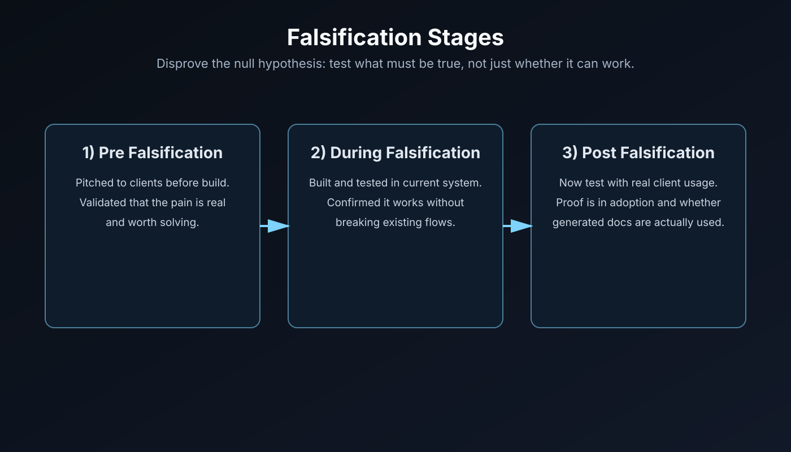

IS 590R · Winter 2026
Frantelligence Final Presentation
Knowledge Builder Agent · Final Deliverable
Midterm to final delta
What Changed Since Midterm
We moved from concept confidence to evidence discipline: refined system model, executed falsification, customer-driven product changes, and a working loop from question -> gap -> generated doc -> review -> publish.
System understanding
Old System Diagram

Old model: unanswered questions were compiled, then answered manually by a human.
System understanding
New System Diagram

New model: AI compiles and drafts answers automatically, with human review before publish.
Problem identification
Falsification Stages

Customer loop
What Customer Feedback Changed
- Per-gap generation was added so admins can fix one urgent gap fast
- Bulk generation remains available for intentional batch cleanup
- Workflow moved to in-app generation + editor-first review
- Email-style prompts were reduced to optional/supporting role
Demo moment
Live Demo
We will leave the slides and come back after demo.
Agent architecture
How the AI Agent Uses RAG

Technical process
PRD -> MVP -> Plan -> Roadmap -> Code
Quick proof slide: we used document-driven development and AI-assisted iteration. We will reference artifacts directly without lingering here.
Debugging discipline
Structured Logging + Test-Log-Fix Loop
- Structured logs are integrated in real application paths
- CLI test scripts support fast verification and clear exit behavior
- Debugging loop: run tests -> inspect logs -> fix -> re-run
- Process evidence is tracked across docs and changelog history
Success and failure planning
Where We Stand Right Now
- Working generated-doc flow is implemented and demoable
- Pre and during falsification stages are validated
- Post/future falsification depends on sustained client adoption
- Next gate: measure whether generated docs are actually used
Final reflection
Process Quality Drives Product Quality
Questions?